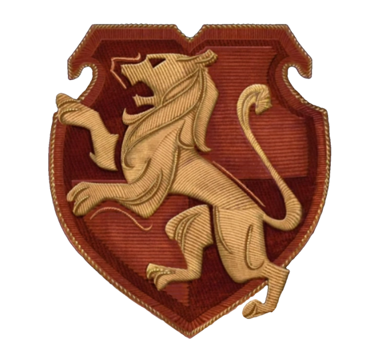
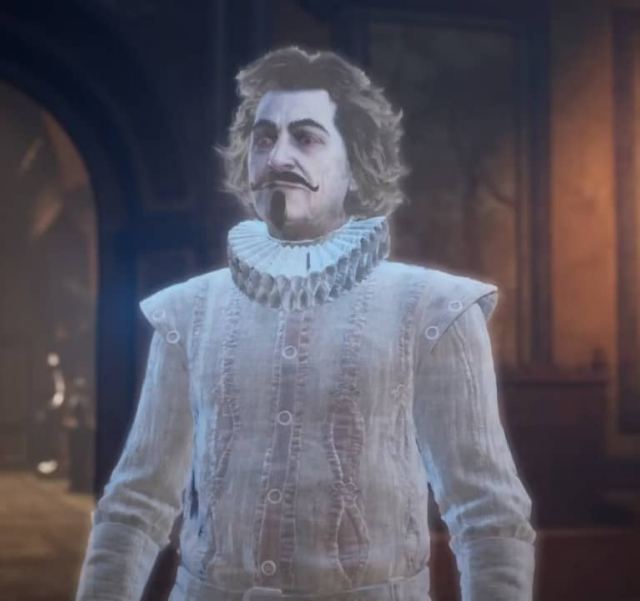

GRYFFINDOR
Casa Gryffindor
Gryffindor, una de las cuatro casas de la prestigiosa escuela de magia Hogwarts, es conocida por su valentía, coraje y determinación. Fundada por Godric Gryffindor, esta casa valora la valentía por encima de todo y acoge a aquellos estudiantes que demuestran un espíritu intrépido y un fuerte sentido de la justicia. Los alumnos de Gryffindor son conocidos por su audacia y su disposición para enfrentarse a los desafíos con valentía. Son individuos apasionados y decididos, dispuestos a luchar por lo que creen que es correcto sin importar las dificultades que puedan enfrentar en el camino. Además de su valentía, los Gryffindor también son conocidos por su lealtad y su fuerte sentido del compañerismo. Aunque pueden tener diferencias entre ellos, siempre están dispuestos a apoyarse mutuamente y a unirse en momentos de necesidad. En Gryffindor, se valora el carácter por encima de todo, y los alumnos son alentados a enfrentar los desafíos con determinación y a nunca retroceder ante la adversidad. Son estudiantes audaces y apasionados, listos para dejar una marca indeleble en la historia de Hogwarts con sus hazañas valientes y sus acciones nobles.
Sala común de Gryffindor
La sala común de Gryffindor, ubicada en el tercer piso de la torre de Hogwarts, es accesible a través del retrato de la Dama Gorda. Luego de decirle la contraseña, se abrirá y entrarás a traves de un pequeño túnel. Una vez dentro, te envolverá una atmósfera de calidez y valentía. Las paredes están decoradas con un tapiz rojo característico de Gryffindor, junto con las emblemáticas banderas de la casa. Los muebles en tonos bordó ofrecen un espacio acogedor para socializar y descansar. Los retratos de antiguos miembros de Gryffindor adornan las paredes, observando con interés las actividades de los estudiantes actuales. En el centro de la sala, una chimenea brinda un cálido respiro en las frías noches de Hogwarts, mientras que los estudiantes cuentan con sus habitaciones en la parte superior de la sala común. Es un lugar donde la amistad y la camaradería florecen, donde los lazos de valentía y lealtad se fortalecen día a día. Es el refugio perfecto para los valientes y nobles corazones que llaman a Gryffindor su hogar en Hogwarts.
Jugabilidad
Tu amiga y compañera de casa será Natsai Onai, una chica valiente y decidida que compartirá diferentes momentos de tu estadía en Hogwarts. Juntos, enfrentarán los peligros que acechan en el mundo mágico y se apoyarán mutuamente en cada paso del camino. Al lucir el uniforme rojo con detalles de leones, mostrarás con orgullo tu pertenencia a Gryffindor y representarás los valores de coraje y determinación que caracterizan a esta noble casa. Además, mientras exploras el mundo mágico, tendrás más probabilidades de encontrar prendas de vestir de color rojo que reflejen tu lealtad a Gryffindor. Pero la verdadera aventura comienza cuando te enfrentas a la misión especial de Gryffindor, guiada por el famoso Nick Casi Decapitado, el fantasma de la casa Gryffindor que hace su aparición en Hogwarts Legacy. En esta emocionante misión, tendrás la oportunidad de adentrarte en las cocinas de Hogwarts, en donde sólo puede entrar quien juegue en la casa Gryffindor, durante esta mision. Posteriormente, te embarcarás en un desafiante minijuego en una plantación de calabazas, donde tu ingenio y habilidades serán puestas a prueba.
